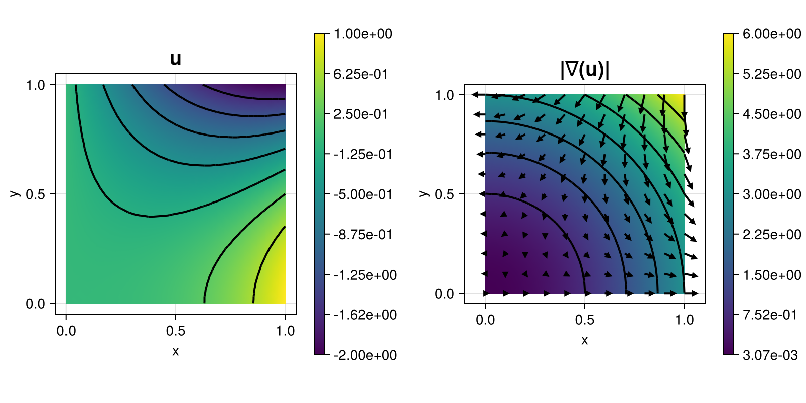

203 : Poisson-Problem DG
This example computes the solution $u$ of the two-dimensional Poisson problem
\[\begin{aligned} -\Delta u & = f \quad \text{in } \Omega \end{aligned}\]
with right-hand side $f$ and inhomogeneous Dirichlet boundary conditions chosen such that $u(x,y) = x^3 - 3xy^2$. This time the problem is solved on a given grid via the discontinuous Galerkin method.
The computed solution looks like this:

module Example203_PoissonProblemDG
using ExtendableFEM
using ExtendableGrids
using LinearAlgebra
using Metis
using Symbolics
# exact data for problem by Symbolics
function prepare_data(; μ = 1)
@variables x y
# exact solution
u = x^3 - 3 * x * y^2
∇u = Symbolics.gradient(u, [x, y])
# right-hand side
Δu = Symbolics.gradient(∇u[1], [x]) + Symbolics.gradient(∇u[2], [y])
f = -μ * Δu[1]
# build functions
u_eval = build_function(u, x, y, expression = Val{false})
∇u_eval = build_function(∇u, x, y, expression = Val{false})
f_eval = build_function(f, x, y, expression = Val{false})
return f_eval, u_eval, ∇u_eval[2]
end
function main(; dg = true, μ = 1.0, τ = 10.0, nrefs = 4, order = 2, bonus_quadorder = 2, parallel = false, npart = parallel ? 8 : 1, Plotter = nothing, kwargs...)
# prepare problem data
f_eval, u_eval, ∇u_eval = prepare_data(; μ = μ)
rhs!(result, qpinfo) = (result[1] = f_eval(qpinfo.x[1], qpinfo.x[2]))
exact_u!(result, qpinfo) = (result[1] = u_eval(qpinfo.x[1], qpinfo.x[2]))
exact_∇u!(result, qpinfo) = (∇u_eval(result, qpinfo.x[1], qpinfo.x[2]))
# problem description
PD = ProblemDescription("Poisson problem")
u = Unknown("u"; name = "potential")
assign_unknown!(PD, u)
assign_operator!(PD, BilinearOperator([grad(u)]; factor = μ, parallel = parallel, kwargs...))
assign_operator!(PD, LinearOperator(rhs!, [id(u)]; bonus_quadorder = bonus_quadorder, parallel = parallel, kwargs...))
assign_operator!(PD, InterpolateBoundaryData(u, exact_u!; bonus_quadorder = bonus_quadorder, regions = 1:4))
# discretize
xgrid = uniform_refine(grid_unitsquare(Triangle2D), nrefs)
if npart > 1
xgrid = partition(xgrid, PlainMetisPartitioning(npart = npart); edges = true)
end
FES = FESpace{order == 0 ? L2P0{1} : H1Pk{1, 2, order}}(xgrid; broken = dg)
# add DG terms
assign_operator!(PD, BilinearOperatorDG(dg_kernel, [jump(id(u))], [average(grad(u))]; entities = ON_FACES, factor = -μ, transposed_copy = 1, parallel = parallel, kwargs...))
assign_operator!(PD, LinearOperatorDG(dg_kernel_bnd(exact_u!), [average(grad(u))]; entities = ON_BFACES, factor = -μ, bonus_quadorder = bonus_quadorder, parallel = parallel, kwargs...))
assign_operator!(PD, BilinearOperatorDG(dg_kernel2, [jump(id(u))]; entities = ON_FACES, factor = μ * τ, parallel = parallel, kwargs...))
assign_operator!(PD, LinearOperatorDG(dg_kernel2_bnd(exact_u!), [id(u)]; entities = ON_BFACES, regions = 1:4, factor = μ * τ, bonus_quadorder = bonus_quadorder, parallel = parallel, kwargs...))
# solve
sol = solve(PD, FES; kwargs...)
# prepare error calculation
function exact_error!(result, u, qpinfo)
exact_u!(result, qpinfo)
exact_∇u!(view(result, 2:3), qpinfo)
result .-= u
result .= result .^ 2
return nothing
end
function dgjumps!(result, u, qpinfo)
result .= u[1]^2 / qpinfo.volume
return nothing
end
ErrorIntegratorExact = ItemIntegrator(exact_error!, [id(u), grad(u)]; quadorder = 2 * (order + 1), params = [μ], kwargs...)
DGJumpsIntegrator = ItemIntegratorDG(dgjumps!, [jump(id(u))]; entities = ON_IFACES, kwargs...)
# calculate error
error = evaluate(ErrorIntegratorExact, sol)
dgjumps = sqrt(sum(evaluate(DGJumpsIntegrator, sol)))
L2error = sqrt(sum(view(error, 1, :)))
H1error = sqrt(sum(view(error, 2, :)) + sum(view(error, 3, :)))
@info "L2 error = $L2error"
@info "H1 error = $H1error"
@info "dgjumps = $dgjumps"
# plot
plt = plot([id(u), grad(u)], sol; Plotter = Plotter)
return L2error, plt
end
function dg_kernel(result, input, qpinfo)
result[1] = dot(input, qpinfo.normal)
return nothing
end
function dg_kernel_bnd(uDb! = nothing)
return function closure(result, qpinfo)
uDb!(result, qpinfo)
result[1:2] = result[1] .* qpinfo.normal
return nothing
end
end
function dg_kernel2(result, input, qpinfo)
result .= input / qpinfo.volume
return nothing
end
function dg_kernel2_bnd(uDb! = nothing)
return function closure(result, qpinfo)
uDb!(result, qpinfo)
result /= qpinfo.volume
return nothing
end
end
end # moduleThis page was generated using Literate.jl.